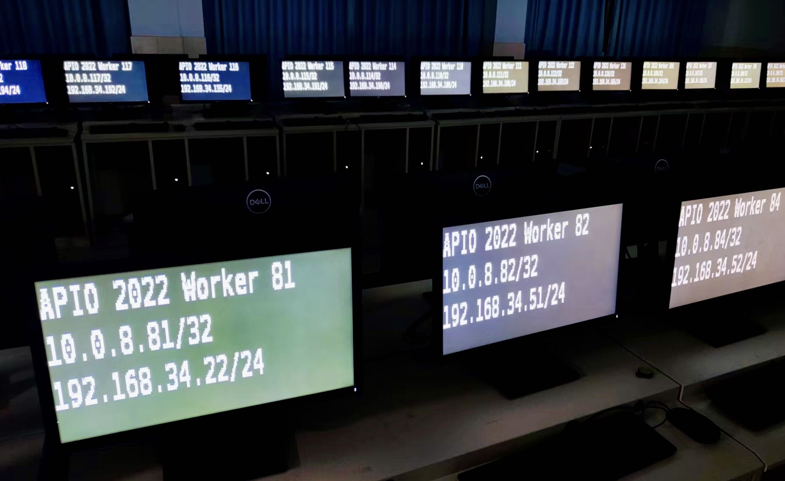
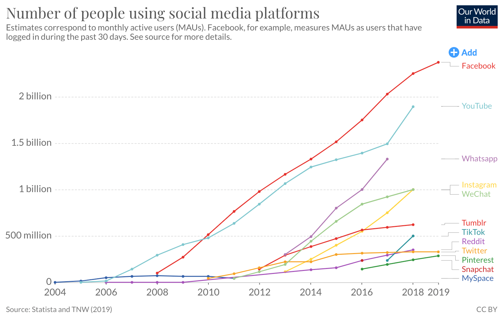

Overview
复习
- Xv6 文件系统
- I/O 设备
- Buffer cache
- Log
- 应用程序
本次课回答的问题
- Q: 现代应用程序如何使用文件系统？
本次课主要内容
- 关系数据库
- Key-Value 存储系统
文件系统的能力和局限
例子：jyywiki.cn Online Judge
使用文件系统存储数据
- 每个课程是一个
目录 - 名单存放在 students.csv (TOKEN 由脚本自动生成)
- 提交以文件形式存放在
课程/学号 xxxxxxxx-2022-04-30-22-09-52.tar.bz2xxxxxxxx-2022-04-30-22-09-52.tar.bz2.results- 由 Online Judge 后段评测后通过 scp 拷贝
- 例子：显示评测结果
for f in wiki.UPLOAD_PATH.glob(
f'{course}/{module}/{stuid}/{file_pattern}'):
if not f.name.endswith('.result'):
# f 是一个提交
可能你们没想到 OJ 就是个文件系统？
文件系统：优点
- 有巨量的 UNIX 工具/标准库可以处理文件
- 容易查看、调试、hacking
- 例子
find OS2022/L1 -name "*.result" | xargs rmspam template.md OS2022/students.csv
文件系统：局限
- 低 scalability
- 任何页面渲染都涉及全量目录遍历
- 低可靠性
- 几乎无法抵抗崩溃 (例如可能有失效的 .result)
关系数据库
Structured Query Language (SQL)
“Everything is a table”
- SQL 描述出 “你想做什么”，数据库引擎帮你 “想办法执行”
- 索引和查询优化
SELECT *
FROM students, submissions
WHERE submission.sid = students.sid AND
submissions.course = 'OS2022' AND
submissions.module = 'M1';
for stu in students:
for sub in submissions:
if (stu.sid, sub.course, sub.module) ==
(sub.sid, 'OS2022', 'M1'):
yield stu, sub
数据库事务

“ACID” - Atomicity, Consistency, Isolation, Durability
- 这可不是 “一把大锁保平安” 能解决的
- 允许数千个连接的并发事务
- Web 2.0 时代网络后台应用的支柱
- 例子：更大规模生产部署的 Online Judge
BEGIN WORK;
-- All or nothing
INSERT INTO students VALUES (...);
INSERT INTO students VALUES (...);
INSERT INTO students VALUES (...);
COMMIT;
数据库的实现
虚拟磁盘 (文件) 上的数据结构
- 把 SQL 查询翻译成 read, write, lseek, fsync 的调用
- 并发控制 (事务处理)
想学习如何实现？
- Bustub from CMU 15-445
- L0 - C++ Primer
- L1 - Buffer Pool Manager
- L2 - Hash Index
- L3 - Query Execution
- L4 - Concurrency Control
- SQLite
走向新时代
存储系统如何应对海量、实时数据？

存储系统如何应对海量、实时数据？ (cont'd)

再次遇见 CAP Theorem

构造 planet-scale 数据库遭遇前所未有的挑战
- 需要一个 “SLED v.s. RAID” 似的创新
分布式系统的基础
“分布式共识协议”
- In search of an understandable consensus algorithm (USENIX ATC'14, Best Paper Award 🏅)
- “Replicated State Machines”
- 又是状态机！
- RaftScope Visualization Tool
- 再次感受被并发编程支配的恐惧
- 不仅并发，而且线程可能随时消失！
- “Replicated State Machines”
更为分布式友好的数据模型：Key-Value
LevelDB Key-Value Storage
- 单进程 (多线程)，按 key 排序
- 支持 transactions
- 支持快照 (对某个状态的瞬时只读快照)
一种实现方法：日志
snapshot()返回当前文件的长度put(k, v)都直接把 (k, v) 追加写入到文件尾部- 效率极高
get(k, v)遍历整个文件- 效率极低 (“读放大”) → 怎么办？
Log-structured Merge (LSM) Trees
一个模拟出的 “Memory Hierarchy”
- 写入直接 append to log file
- Crash safe; 不能更快了
解决读放大
- 不管三七二十一，先在内存中维护 log 的实时数据结构 (memtable)
- get 可以先在内存
- Level 0: 直接把 memtable dump 到磁盘
- 查找失败时，会到下一层继续查找
- Level 1: 在 Level 0 满 (4MB) 时，排序所有 key，与 Level 1 合并
- 下一层大小是上一层 10 倍
- Level 2: 在 Level 1 满时，把操作应用到 Level 2, ...
我们所处的新时代
存储系统的基本假设一直受到挑战
- SSD; 低延迟、高速顺序读写
- NVM (Intel Optane); byte addressable
- RDMA 高速网络互联
- ……
未来？
- Transactional flash?
- SQL 的回归 (F1, TiDB, CockroachDB, ...)
- 甚至回到 “文件系统”？
总结
总结
本次课回答的问题
- Q: 现代应用程序如何使用文件系统？
Takeaway messages
- 文件系统提供了较为简陋的文件索引机制
- 无法保证多操作之间的原子性
- 直接使用文件系统面临一致性和性能问题
- 关系数据库
- Key-Value Store (NoSQL DB)